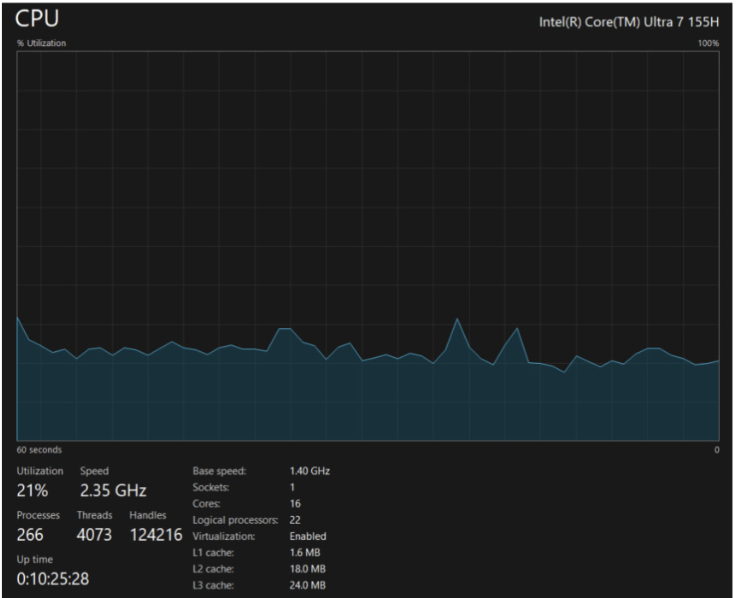
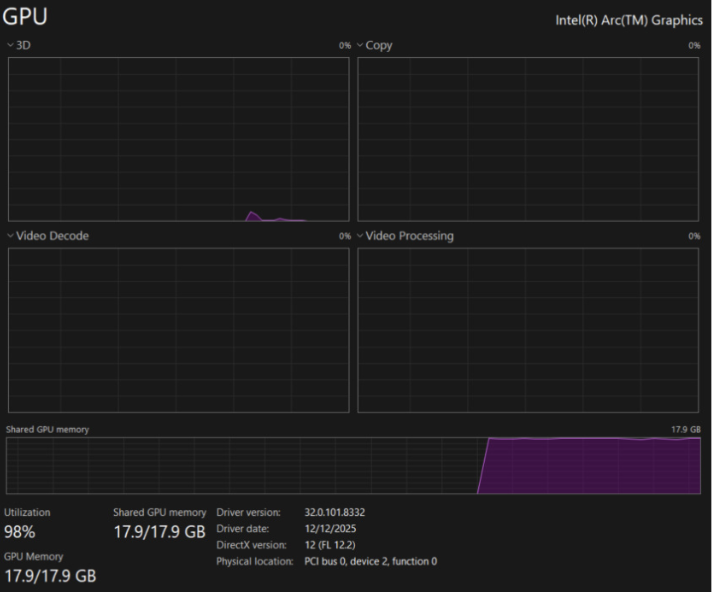

Testing
For both AI-Autostart and SoundLab Game, we placed a strong emphasis on manual and user testing. Our overall approach covered four areas:
- Manual exploratory testing — carried out continuously throughout development
- Unit testing — focused on the SoundLab Game's Storage Manager
- Performance testing — CPU and GPU usage during AI generation in the SoundLab Game Engine
- User testing — conducted with the development team and coursemates
The SoundLab Game was tested across all four areas. Unit tests were written for storageManager — the component responsible for reading and writing .noui files — as it is the most critical part of the system. Other components (GUI, AI generation, gesture recognition, audio playback) are harder to test automatically and were covered through exploratory and user testing instead.
AI-Autostart was tested through manual and user testing only.
Manual testing consisted of two main approaches:
Testing During Development
After the addition of every new feature, we manually tested the full application to catch any regressions or newly introduced bugs. This was informal but frequent throughout the development process.
Testing by Other Users
We also had other users interact with the application without our guidance. This uncovered usability issues and unexpected behaviours that we had grown blind to during development.
While the application is rather complex, the main methods used by the frontend are encapsulated within the StorageManager package. This is also the code we have chosen to unit test. The tests include both game saving and game loading.
For game saving, Talker is stubbed, so that only the GameSaver logic is validated. The tests include validation of proper saving of all the audio files into a corresponding folder in the .noui archive, and overwriting of an existing .noui game.
For game loading, validation of the whole deserialization logic is tested, along with proper unwrapping of the .noui filetype. These tests ensure correct interaction with the .noui files generated by the SoundLab Game Engine.
An instance we have chosen not to test automatically is the AI generation code. We have found that the process of validation of the game created is hard to validate algorithmically, and have therefore chosen to avoid unit testing it, and rely on occasional manual testing, analytically validating the output produced.
We used performance testing to evaluate CPU and GPU usage of the local LLM in the SoundLab Game Engine during AI generation.
Test Hardware
Since one of our requirements is that the application runs on any Windows device, we did not feel it was relevant or realistic to test on higher-end hardware.
Results
CPU utilisation during generation remained moderate at around 21% average and stayed consistent. When the same process was run using the GPU, usage reached 98% and the full 17.9 GB of shared GPU memory was in use.
Based on these results, our compiled product is configured to run AI generation on the CPU, where it performed better on the test device.


Testers: 10 participants aged 18–22 (male and female)
Test Cases
| Product | Task |
|---|---|
| AI-Autostart | Configure the settings to map a gesture to open a file, then trigger it using their webcam |
| SoundLab Game Player | Play through a .noui game using webcam mode |
Play through a .noui game using keyboard mode |
|
| SoundLab Game Engine | Manually create a short game and save it |
| AI-generate a game using the AI helper side panel |
User Feedback
- Users enjoyed seamlessly opening
.nouigames through the application - One user was frustrated that it could not close Word
- Users found gesture recognition to be reliable and the application easy to use
- One user found it frustrating that the Main Menu audio played again after quitting
- Users found the game prompts to be descriptive and easy to follow
- Users enjoyed the voice preview button
- All testers used the AI helper panel and provided positive feedback about the live generation preview